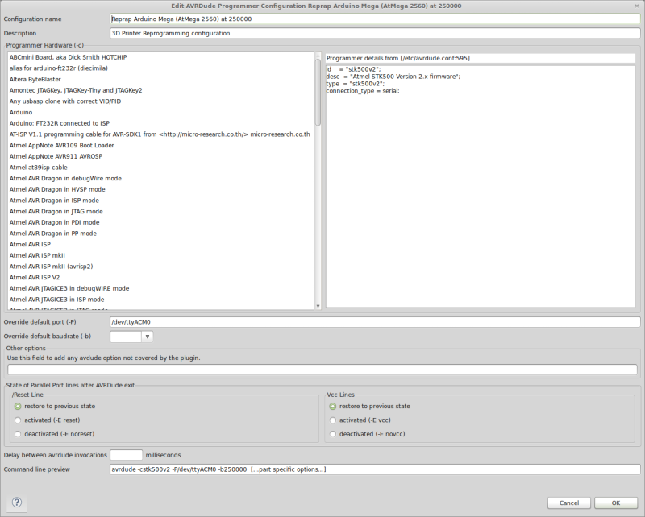

Flashing Marlin with Eclipse and AVR Dude
Intro
3D printing is still very much in the hobbyist stage, and I am a tinkerer at heart. So flashing my printer's firmware is a basic operation - in fact it has to be a basic operation, since most configuration changes are baked into the firmware.
But, I run my printer at 250000 baud rate over USB. This is an excellent choice for printing since the error rate from the serial line on the Arduino is basically 0, and it's faster to boot. Excellent for rapid G-code sending.
But it can make reprogramming using the standard Arduino IDE a bit of a pain, and by and large I don't like the standard Arduino IDE.
The problem is that your Arduino in 3D printing mode is running at a non-standard baudrate. Linux can handle this just fine, as can the underlying programming tool of Arduino avrdude, but the IDE doesn't let you just type in what you need. Eclipse does. Get the latest version of AVRdude you can, since it makes things a lot easier - I have 6.0.1 which is built into Ubuntu "Trusty Tahr".
Reprogramming with Eclipse
People have covered setting up Eclipse for Arduino elsewhere, and I will in the future cover my setup in my own words (I believe understanding comes from finding an idea explained in the right voice a lot of the time) but for now I'll just say it works pretty well.
Reprogramming an Arduino Mega 2560 (or compatible)
The basic command line you need for the Arduino Mega when it's running at 250000 bps is very simple. The avrdude command should be avrdude -cstk500v2 -P/dev/ttyACM0 -b250000 in Eclipse. You can enter this by typing in the baud rate directly in the drop down box - Eclipse will accept it just fine.
The AVRdude settings screen should look something like this when you're done:

The benefit of this configuration is your printer (or arduino for another project) can be easily reflashed without having to time-out resetting it so you can run AVRdude at one of the "standard" baudrates.
It's worth noting that by creating a custom boards.txt configuration it might be possible to accomplish this in the Arduino IDE as well, but Eclipse is a much easier to use dev-environment for big Arduino projects (like 3D printer firmwares) that I don't really have any inclination to avoid it in the future (plus is generalizes out to non-Arduino AVR programming nicely).
Going further
This is just a short "I did this a few minutes ago note". In the future I'll detail my Arduino Eclipse workspace, to add to the signal to noise ratio on that subject.